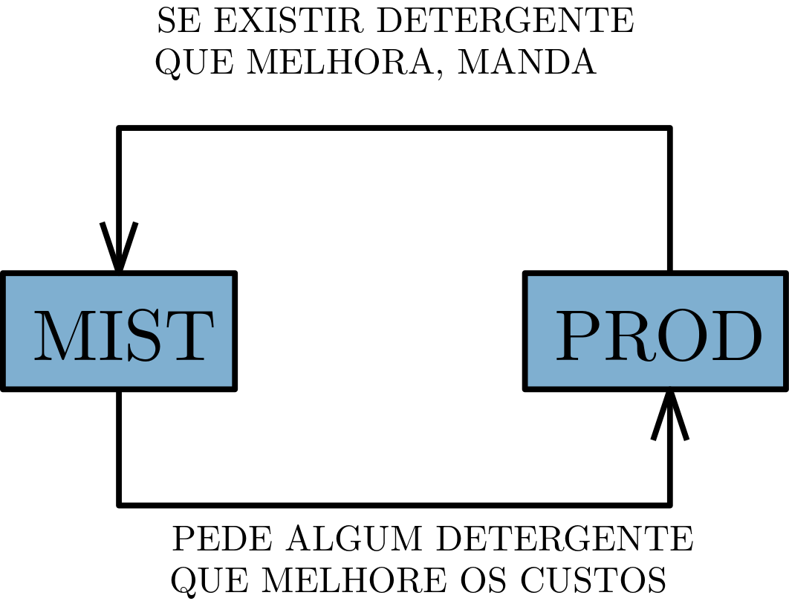
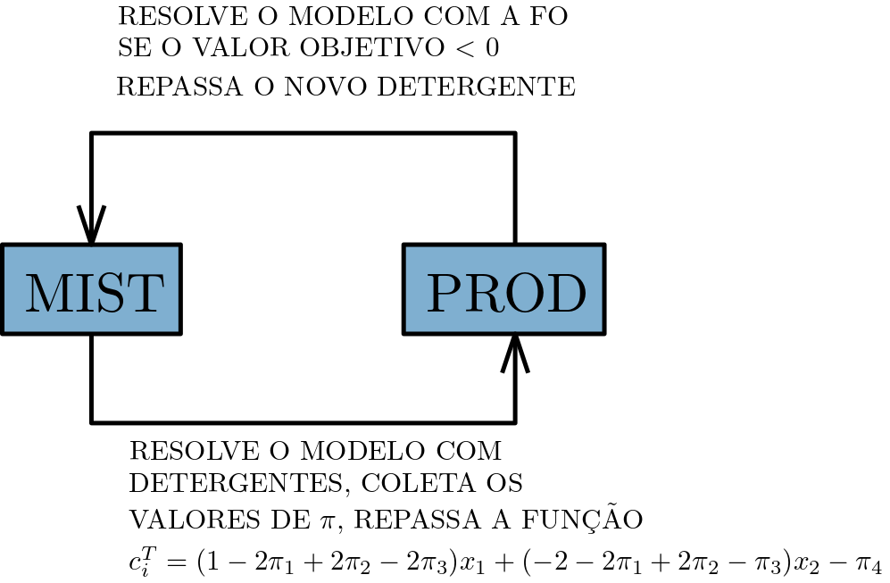
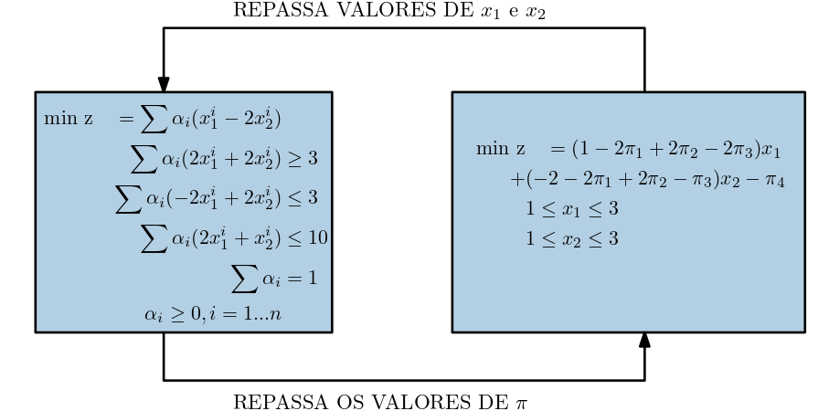

Chapter 9 Decomposição de Dantzig-Wolfe
Vamos entender a idéia por trás do método, primeiramente por meio de um exemplo.
9.1 Exemplo inicial
Considere um produto detergente, que é composto por duas substancias, \(x_1\) e \(x_2\). A fábrica PROD consegue criar diversas receitas desse detergente (com várias combinações de \(x_1\) e \(x_2\)), pois ela sabe como as substâncias reagem entre si, os equipamentos necessários, etc…Para determinar as quantidades de \(x_1\) e \(x_2\), as restrições a serem satisfeitas são as seguintes:
\[\begin{align} & 1 \leq x_1 \leq 3\\ & 1 \leq x_2 \leq 3\\ \end{align}\]
A fábrica PROD produz e vende detergentes prontos, ou seja, composições
\[\begin{equation*} x_0 = \left[ \begin{array}{cc} x_1 \\ x_2 \end{array} \right] \end{equation*}\]
Já a fábrica MIST somente usa os detergentes de PROD para venda. O que a MIST faz é criar composições com os detergentes prontos da PROD. As composições podem ser realizadas como combinações convexas dos detergentes. As combinações, no entanto, devem garatir que as quantidades \(x_1\) e \(x_2\) do produto final respeitem as seguintes restrições:
\[\begin{align} 2 x_1 + 2 x_2 & \geq 3\\ -2 x_1 + 2 x_2 & \leq 3\\ 2 x_1 + x_2 & \leq 10\\ \end{align}\]
Sempre lembrando que \(x_1\) e \(x_2\) já são o resultado da mistura completa.
A mistura completa tem seu lucro atrelado às quantidades finais de \(x_1\) e \(x_2\):
\[\begin{equation*} z = - x_1 + 2 x_2 \end{equation*}\]
Ou seja, podemos usar como função objetivo na forma de minimização o inverso:
\[\begin{equation*} \text{min} \quad z = x_1 - 2 x_2 \end{equation*}\]
No entanto, MIST não controla as quantidades de \(x_1\) e \(x_2\) diretamente! Dados detergentes prontos que já contém quantidades fixas de \(x_1\) e \(x_2\) (fornecidos por PROD), MIST controla somente quanto de cada detergente será utilizado.
Por exemplo: suponha que MIST tenha 2 composições de detergentes já fornecidos por PROD, \(d_1\) E \(d_2\):
\[\begin{equation*} d_1 = \left[ \begin{array}{cc} x_1^1 \\ x_2^1 \end{array} \right], d_2 = \left[ \begin{array}{cc} x_1^2 \\ x_2^2 \end{array} \right] \end{equation*}\]
A decisão de MIST então é como combinar as quantidades de detergentes \(d_1\) e \(d_2\) (determinar as proporções de cada um, expressas pelas variáveis \(\alpha_1\) e \(\alpha_2\)), para criar um novo detergente \(d_n\):
\[\begin{equation*} d_n = \alpha_1 \left[ \begin{array}{cc} x_1^1 \\ x_2^1 \end{array} \right] + \alpha_2 \left[ \begin{array}{cc} x_1^2 \\ x_2^2 \end{array} \right]\\ \alpha_1 + \alpha_2 = 1 \\ \alpha_1, \alpha_2 \geq 0 \end{equation*}\]
De forma geral, se MIST tiver \(n\) detergentes disponíveis, então temos que:
\[\begin{equation*} d_n = \left[ \begin{array}{cc} x_1 \\ x_2 \end{array} \right] = \left[ \begin{array}{cc} \sum\alpha_ix_1^{i} \\ \sum\alpha_ix_2^{i} \end{array} \right] \\ \sum\alpha_i = 1 \\ \alpha_i \geq 0, i=1...n \end{equation*}\]
Lembrando que após a mistura, existem restrições em \(x_1\) e \(x_2\) que ainda devem ser seguidas. Podemos então fazer a substituição dos valores finais de \(x_1\) e \(x_2\), já com as proporções \(\alpha_i\) nas restrições:
\[\begin{align} \text{min z} \quad = \sum\alpha_ix_1^{i} - 2 \sum\alpha_ix_2^{i} \\ 2 \sum\alpha_ix_1^{i} + 2 \sum\alpha_ix_2^{i} & \geq 3\\ -2 \sum\alpha_ix_1^{i} + 2 \sum\alpha_ix_2^{i} & \leq 3\\ 2 \sum\alpha_ix_1^{i} + \sum\alpha_ix_2^{i} & \leq 10\\ \sum\alpha_i & = 1 \\ \alpha_i \geq 0, i=1...n \end{align}\]
Como neste problema \(\alpha_i\) são as variáveis, podemos agrupá-las, ficando com:
Mod I \[\begin{align} \text{min z} \quad = \sum\alpha_i(x_1^{i} - 2x_2^i) \\ \sum\alpha_i(2x_1^{i} + 2 x_2^{i}) & \geq 3\\ \sum\alpha_i(-2x_1^{i} + 2 x_2^{i}) & \leq 3\\ \sum\alpha_i(2x_1^{i} + x_2^{i}) & \leq 10\\ \sum\alpha_i & = 1 \\ \alpha_i \geq 0, i=1...n \end{align}\]
Note que, para que o problema acima possa ser resolvido, é necessário pelo menos um detergente.
Vamos considerar que PROD já tem um detergente produzido, com as composições:
\[\begin{equation*} d_1 = \left[ \begin{array}{cc} x_1^1 \\ x_2^1 \end{array} \right] = \left[ \begin{array}{cc} 1 \\ 1 \end{array} \right] \end{equation*}\]
Podemos agora substituir esses valores de \(x_1\) e \(x_2\) no modelo de MIST:
\[\begin{align} \text{min z} \quad = \alpha_1(1 - 2) \\ \alpha_1(2 + 2) & \geq 3\\ \alpha_1(-2 + 2) & \leq 3\\ \alpha_1(2 + 1) & \leq 10\\ \alpha_1 & = 1 \\ \alpha_1 \geq 0 \end{align}\]
E finalmente:
\[\begin{align} \text{min z} \quad = -\alpha_1 \\ 4\alpha_1 & \geq 3\\ 0\alpha_1 & \leq 3\\ 3\alpha_1 & \leq 10\\ \alpha_1 & = 1 \\ \alpha_1 \geq 0 \end{align}\]
Resolvendo o PL, temos a solução (obvia) \(\alpha_1 =1\) com custo -1. A pergunta que podemos fazer agora é a seguinte: será que PROD poderia produzir algum detergente, com composições \(x_1\) e \(x_2\) de tal forma que, quando MIST for usar na mistura com o detergente já existente, consiga melhorar a função objetivo? Se sim, MIST pode “ligar” para PROD e pedir para que esse detergente seja produzido. A relação entre as empresas pode ser sintetizada na imagem abaixo:

Agora surge mais uma dúvida: o que MIST deve pedir?
Podemos usar o próprio algoritmo Simplex para nos ajudar. Sabemos que para que uma variável entre na base (ou seja \(\rightarrow\) [melhore a função objetivo]{style = “color:Brown”}), seu custo atualizado deve ser negativo. Ainda, sabemos pela tabela genérica Simplex, que o custo atualzado é dado por (para mais informações sobre a Tabela genérica, ver o Capítulo 7):
\[\begin{equation*} c_i^T = c_i^T - c_B^TB^{-1}A_i \end{equation*}\]
Sabemos que as variáveis duais \(\pi\) podem ser definidas como:
\[\begin{equation*} \pi = c_B^TB^{-1} \end{equation*}\]
Substituindo, temos então que o custo atualizado para uma coluna \(i\):
\[\begin{equation*} c_i^T = c_i^T - \pi A_i \end{equation*}\]
Ora, que pelo Mod I percebemos que para qualquer nova variável que seja inserida no modelo (lembrando que os valores de \(x_1\) e \(x_2\) são constantes, as variáveis são os \(\alpha_i\)), teremos um custo \(c_i\) de:
\[\begin{equation*} c_i^T = (x_1 - 2x_2) \end{equation*}\]
E a sua coluna \(A_i\) no modelo fica:
\[\begin{equation*} A_i = \left[ \begin{array}{cc} 2x_1 + 2x_2 \\ -2x_1 + 2x_2 \\ 2x_1 + x_2 \end{array} \right] \end{equation*}\]
De forma que, para quaisquer valores de \(x_1\) e \(x_2\) o custo atualizado na função objetivo fica da seguinte forma:
\[\begin{equation*} c_i^T = c_i^T - \pi A_i \Rightarrow \\ c_i^T = (x_1 - 2x_2) - \left[ \begin{array}{cccc} \pi_1 & \pi_2 & \pi_3 & \pi_4 \end{array} \right] \left[ \begin{array}{cc} 2x_1 + 2x_2 \\ -2x_1 + 2x_2 \\ 2x_1 + x_2 \end{array} \right] \Rightarrow \\ c_i^T = x_1 - 2x_2 - \pi_1(2x_1 + 2x_2) - \pi_2(-2x_1 + 2x_2) - \pi_3(2x_1 + x_2) - \pi_4 \end{equation*}\]
E finalmente:
\[\begin{equation*} c_i^T = (1 - 2\pi_1 + 2\pi_2 - 2\pi_3)x_1 + (-2 - 2\pi_1 + 2\pi_2 - \pi_3)x_2 - \pi_4 \end{equation*}\]
Agora sabemos que, independentemente do detergente que seja produzido por PROD, o seu custo atualizado na função objetivo de MIST será esse. Dessa forma, MIST pode [pedir para PROD produzir um detergente com o menor custo atualizado possível]{style = “color:Brown”} (pois sabemos que se \(c_i < 0\) indica uma variável que vai entrar na base), seguindo, é claro, as regras de produção impostas por PROD.
Lembrando das considerações:
- Pelo menos um detergente deve ser fornecido para MIST
- Com esse detergente o modelo é resolvido e os valores duais coletados
- Com os valores duais MIST repassa para PROD uma nova função objetivo, que PROD deve minimizar
Podemos verificar a nova relação por meio da seguinte Figura:

Ainda, se considerarmos os termos matemáticos, temos dois modelos de PL que se retroalimentam, como na Figura:

9.1.1 Resolvendo o exemplo
Vamos agora resolver o problema. Precisamos determinar quais serão as porcentagens usadas de cada detergente por MIST, e ao longo do processo, de forma iterativa, vamos pedindo mais detergentes prontos para PROD, até o momento que nenhum detergente melhore a função objetivo de MIST.
Considerando o detergente inicial
\[\begin{equation*} d_1 = \left[ \begin{array}{cc} x_1^1 \\ x_2^1 \end{array} \right] = \left[ \begin{array}{cc} 1 \\ 1 \end{array} \right] \end{equation*}\]
MIST tem o modelo:
Modelo 1 MIST \[\begin{align} \text{min z} \quad = -\alpha_1 \\ 4\alpha_1 & \geq 3\\ 0\alpha_1 & \leq 3\\ 3\alpha_1 & \leq 10\\ \alpha_1 & = 1 \\ \alpha_1 \geq 0 \end{align}\]
Resolvendo, temos:
- \(z = -1\)
- \(\alpha_1 = 1\)
- \(\pi_1\) = 0, \(\pi_2\) = 0, \(\pi_3\) = 0, \(\pi_4\) = -1
- Detergentes: \(d_1^T =[1,1]\)
Ou seja, MIST usa 100% (\(\alpha_1 = 1\)) do único detergente que ela possui.
Agora fazemos a substituição dos valores de \(\pi\) na função de custo atualizado (que será repassado para PROD), gerando o modelo (o último -1 é do \(\pi_4\)):
Modelo 1 PROD \[\begin{align} \text{min z} \quad = x_1 - 2x_2 -(-1)\\ 2 x_1 + 2 x_2 & \geq 3\\ -2 x_1 + 2 x_2 & \leq 3\\ 2 x_1 + x_2 & \leq 10\\ x_1 \geq 0, x_2 & \geq 0 \end{align}\]
Resolvendo o modelo 1 PROD temos:
- \(z = -4\)
- \(x^T = [x_1,x_2] = [1,3]\)
Como \(z = -4\) e portanto \(\leq 0\), esse novo detergente pode ser usado por MIST para melhorar a sua função objetivo. Substituindo os novos valores e criando uma nova variável \(\alpha_2\), temos:
Modelo 2 MIST \[\begin{align} \text{min z} \quad = -\alpha_1 & -5 \alpha_2 \\ 4\alpha_1 & + 8 \alpha_2 \geq 3\\ 0\alpha_1 & + 4 \alpha_2 \leq 3\\ 3\alpha_1 & + 5 \alpha_2 \leq 10\\ \alpha_1 & + \alpha_2 = 1 \\ \alpha_1, \alpha_2 \geq 0 \end{align}\]
Note que [uma nova coluna foi inserida ao modelo]{style = “color:Brown”}. Resolvendo o PL temos:
- \(z = -4\)
- \(\alpha_1 = 0.25\), \(\alpha_2 = 0.75\)
- \(\pi_1 = 0\), \(\pi_2 = -1\), \(\pi_3 = 0\), \(\pi_4 = -1\)
- Detergentes: \(d_1^T =[1,1]\), \(d_2^T =[1,3]\)
Ou seja, o melhor detergente que MIST consegue produzir é uma mistura dos dois que eles possuem, nas seguintes proporções:
\[\begin{equation*} d = 0.25 \left[ \begin{array}{cc} 1.0 \\ 1.0 \end{array} \right] + 0.75 \left[ \begin{array}{cc} 1.0 \\ 3.0 \end{array} \right] = \left[ \begin{array}{cc} 1.0 \\ 2.5 \end{array} \right] \end{equation*}\]
Novamente podemos substituir os valores de \(\pi\) para construir a nova função objetivo do problema de PROD, ficando com:
Modelo 2 PROD \[\begin{align} \text{min z} \quad = -x_1 -(-1)\\ 2 x_1 + 2 x_2 & \geq 3\\ -2 x_1 + 2 x_2 & \leq 3\\ 2 x_1 + x_2 & \leq 10\\ x_1 \geq 0, x_2 & \geq 0 \end{align}\]
Com solução:
- \(z = -2\)
- \(x^T = [x_1,x_2] = [3,1]\)
Como \(z = -2\) e portanto \(\leq 0\), esse novo detergente pode ser usado por MIST para melhorar a sua função objetivo. Substituindo os novos valores e criando uma nova variável \(\alpha_3\), temos:
Modelo 3 MIST \[\begin{align} \text{min z} \quad = -\alpha_1 & -5 \alpha_2 & + \alpha_3 & \\ 4\alpha_1 & + 8 \alpha_2 & + 8\alpha_3 &\geq 3\\ 0\alpha_1 & + 4 \alpha_2 & - 4\alpha_3 &\leq 3\\ 3\alpha_1 & + 5 \alpha_2 & + 7\alpha_3 &\leq 10\\ \alpha_1 & + \alpha_2 & + \alpha_3 & = 1\\ \alpha_1, &\alpha_2, &\alpha_3 &\geq 0 \end{align}\]
Resolvendo, temos:
- \(z = -4.25\)
- \(\alpha_1 = 0.000\), \(\alpha_2 = 0.875\) , \(\alpha_3 = 0.125\)
- \(\pi_1 = 0\), \(\pi_2 = -0.75\), \(\pi_3 = 0\), \(\pi_4 = -2\)
- Detergentes: \(d_1^T =[1,1]\), \(d_2^T =[1,3]\), \(d_3^T =[3,1]\)
Ou seja, o melhor detergente que MIST consegue produzir é uma mistura dos 3 que eles possuem, nas seguintes proporções:
\[\begin{equation*} d = 0.000 \left[ \begin{array}{cc} 1.0 \\ 1.0 \end{array} \right] + 0.875 \left[ \begin{array}{cc} 1.0 \\ 3.0 \end{array} \right] + 0.125 \left[ \begin{array}{cc} 3.0 \\ 1.0 \end{array} \right] = \left[ \begin{array}{cc} 1.25 \\ 2.75 \end{array} \right] \end{equation*}\]
Substituindo os valores de \(\pi\) para calcular o custo reduzido, e a nova função objetivo de PROD:
Modelo 3 PROD \[\begin{align} \text{min z} \quad = -0.5x_1 & - 0.5x_2 -(-2)\\ 2 x_1 + 2 x_2 & \geq 3\\ -2 x_1 + 2 x_2 & \leq 3\\ 2 x_1 + x_2 & \leq 10\\ x_1 \geq 0, x_2 & \geq 0 \end{align}\]
Resolvendo temos:
- \(z = -1\)
- \(x^T = [x_1,x_2] = [3,3]\)
O custo atualizado é \(\leq 0\), portanto o novo detergente pode ser adicionado ao modelo de MIST:
Modelo 3 MIST \[\begin{align} \text{min z} \quad = -\alpha_1 & -5 \alpha_2 & + \alpha_3 & -3 \alpha_4 &\\ 4\alpha_1 & + 8 \alpha_2 & + 8\alpha_3 & +12 \alpha_4 &\geq 3\\ 0\alpha_1 & + 4 \alpha_2 & - 4\alpha_3 & + 0\alpha_4 & \leq 3\\ 3\alpha_1 & + 5 \alpha_2 & + 7\alpha_3 & + 9\alpha_4 & \leq 10\\ \alpha_1 & + \alpha_2 & + \alpha_3 & + \alpha_4 &= 1\\ \alpha_1, &\alpha_2, &\alpha_3 & \alpha_4 \geq 0 \end{align}\]
Resolvendo, temos:
- \(z = -4.25\)
- \(\alpha_1 = 0.000\), \(\alpha_2 = 0.75\) , \(\alpha_3 = 0.0\), \(\alpha_4 = 0.25\)
- \(\pi_1 = 0\), \(\pi_2 = -0.5\), \(\pi_3 = 0\), \(\pi_4 = -3\)
- Detergentes: \(d_1^T =[1,1]\), \(d_2^T =[1,3]\), \(d_3^T =[3,1]\), \(d_4^T =[3,3]\)
Ou seja, o melhor detergente que MIST consegue produzir é uma mistura dos 4 que eles possuem, nas seguintes proporções:
\[\begin{equation*} d = 0.0 \left[ \begin{array}{cc} 1.0 \\ 1.0 \end{array} \right] + 0.75 \left[ \begin{array}{cc} 1.0 \\ 3.0 \end{array} \right] + 0.0 \left[ \begin{array}{cc} 3.0 \\ 1.0 \end{array} \right] + 0.25 \left[ \begin{array}{cc} 3.0 \\ 3.0 \end{array} \right] = \left[ \begin{array}{cc} 1.5 \\ 3.0 \end{array} \right] \end{equation*}\]
Substituindo os valores de \(\pi\) para calcular o custo reduzido, e a nova função objetivo de PROD:
Modelo 4 PROD \[\begin{align} \text{min z} \quad = & -x_2 -(-3)\\ 2 x_1 + 2 x_2 & \geq 3\\ -2 x_1 + 2 x_2 & \leq 3\\ 2 x_1 + x_2 & \leq 10\\ x_1 \geq 0, x_2 & \geq 0 \end{align}\]
Resolvendo temos:
- \(z = 0\)
- \(x^T = [x_1,x_2] = [1,3]\)
Como o custo atualizado é zero, isso implica que não existe mais nenhum detergente que PROD possa criar, que vai melhorar as misturas que MIST faz.
9.1.2 Entendendo o que aconteceu
Poderíamos pensar que, como os problemas de PROD e de MIST envolvem as variáveis \(x_1\) e \(x_2\) (MIST de forma indireta, por meio da combinação linear), se MIST soubesse das restrições envolvidas no processo de fabricação, ela mesma poderia determinar qual detergente fabricar. Ou seja, um único modelo poderia ser criado com todas as restrições, como mostrado abaixo:
Modelo COMPLETO \[\begin{align} \text{min z} \quad = x_1 - 2 x_2 \\ x_1 \quad \leq 3\\ \quad x_2 \leq 3\\ 2 x_1 + 2 x_2 & \geq 3\\ -2 x_1 + 2 x_2 & \leq 3\\ 2 x_1 + x_2 & \leq 10\\ x_1 \geq 0, x_2 & \geq 0 \end{align}\]
Este modelo possui a seguinte região factível:
No entanto, quando olhamos os problemas separados, temos as seguinte regiões factíveis:
Inicialmente, MIST começou o processo com um único detergente (que já havia sido dado), e que era factível considerando as duas fábricas:
\[\begin{equation*} d_1 = \left[ \begin{array}{cc} x_1^1 \\ x_2^1 \end{array} \right] = \left[ \begin{array}{cc} 1 \\ 1 \end{array} \right] \end{equation*}\]
Em seguida, quando MIST repassou a função objetivo para PROD, PROD retornou um novo detergente:
\[\begin{equation*} d_2 = \left[ \begin{array}{cc} x_1^2 \\ x_2^2 \end{array} \right] = \left[ \begin{array}{cc} 1 \\ 3 \end{array} \right] \end{equation*}\]
Note que este detergente não era factível para MIST, no entanto, ele pode ser combinado para gerar um detergente factível. Isso por meio da combinação convexa, como mostrado abaixo (altere o slider para ver):
Lembre que a região factível de MIST que está na imagem seria considerando o caso de ter todas as restrições juntas. Na verdade o que está acontecendo é que a região está sendo criada pouco a pouco, com cada novo detergente adicionado. A região factível do problema de MIST é na verdade somente a semi-reta indicada abaixo (a parte que não está na semi-reta mas chega até D2 é infactível):
Quando adicionamos mais um detergente, inserimos mais um ponto no problema de MIST, aumentando mais ainda a região factível. Considere a região agora com a inserção do detergente
\[\begin{equation*} d_3 = \left[ \begin{array}{cc} x_1^2 \\ x_2^2 \end{array} \right] = \left[ \begin{array}{cc} 3 \\ 1 \end{array} \right] \end{equation*}\]
Com esse novo ponto a região favtível fica como a área abaixo.